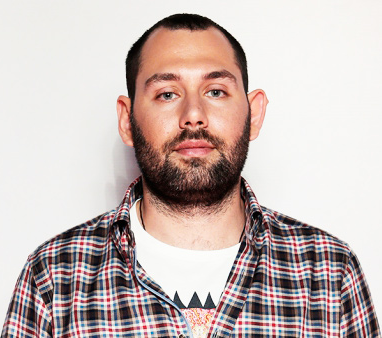

| МОБИЛЬНЫЙ НОМЕР | 0506577451 |  |
| ЕЛ.ПОЧТА | nickermen@ex.ua | |
| ВОЗРАСТ | 26 ЛЕТ(03.05.1992) | |
| ПРОЖИВАНИЕ | ПОЛТАВА | |
| ЖЕЛ. ЗАРПЛАТА | 25 000 ГРН | |
| ГРАЖДАНСТВО | УКРАИНА | |
| ЯЗЫКИ | УКРАИНСКАЯ - РОДНОЙ РУССКАЯ - ВЛАДЕЮ СВОБОДНО АНГЛИЙСКАЯ - ВЫЩЕ СРЕДНЕГО |
| ОБРАЗОВАНИЕ | ВЫСШЕЕ ПНТУ ИМ. ЮРИЯ КОНДРАТЮКА - ИНЖЕНЕР |
| ОПЫТ РАБОТИ | февраль 2014 - до этого времени ТОВ Студио Модерна Инженер с компьютерных систем |
|
Наличие навыков: |
| Ключевые навыки: |
|